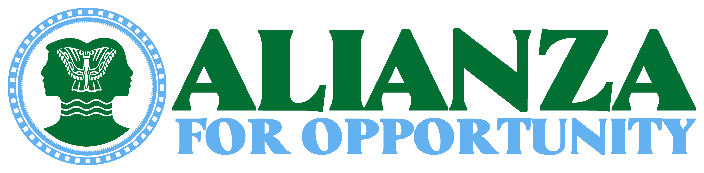
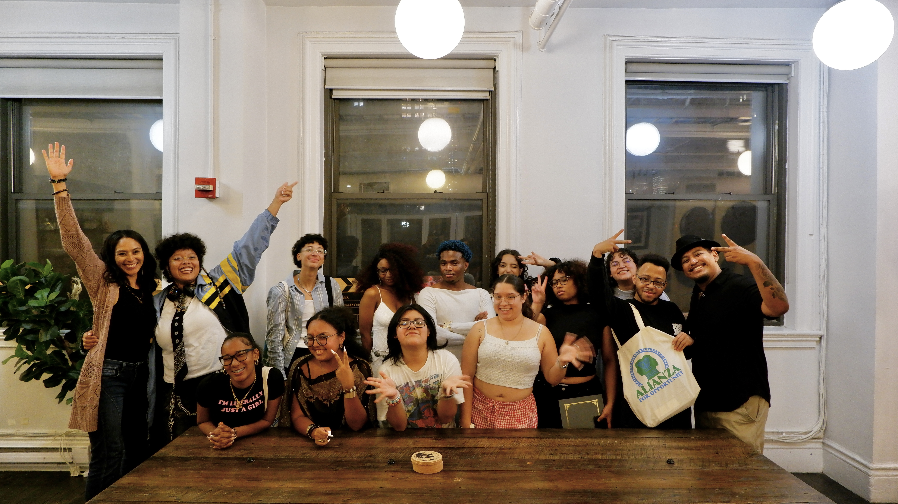
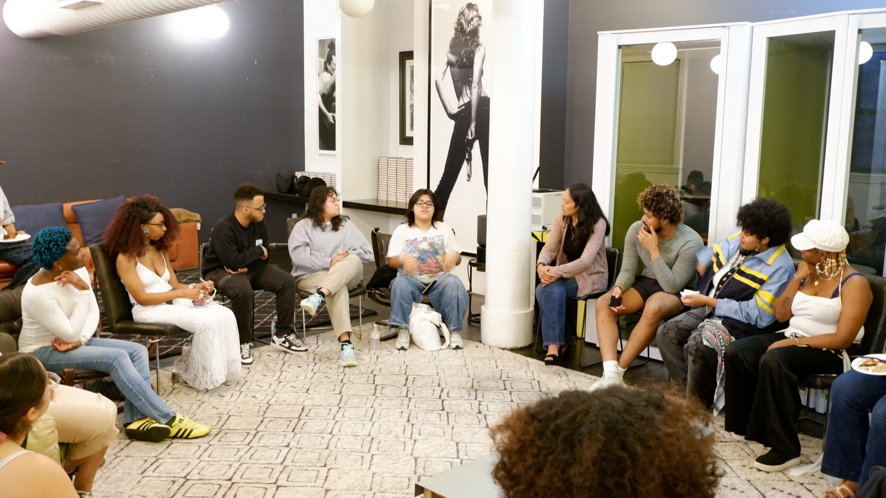
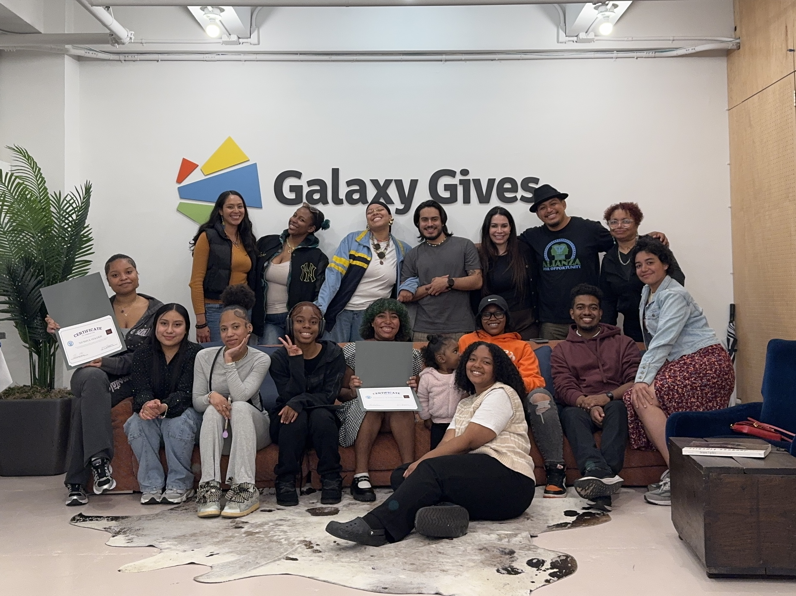
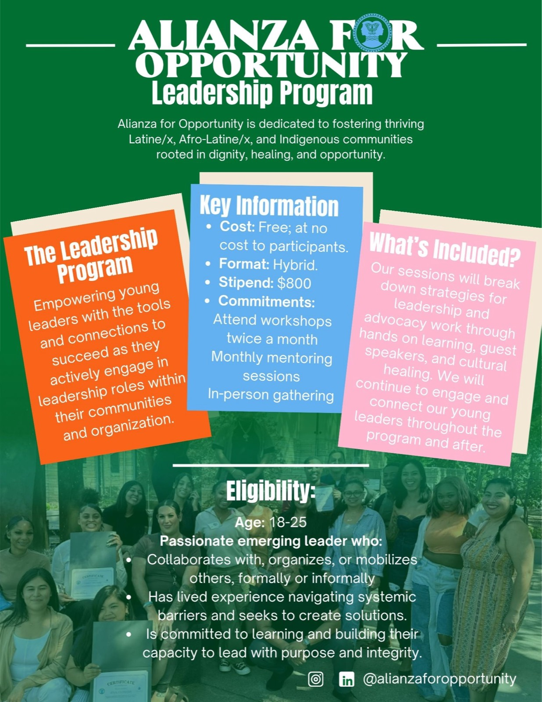

Values-Based Leadership
Participants identify their personal values, challenge traditional leadership myths, explore different leadership styles, and develop principles for authentic, purpose-driven leadership.

A leadership program for emerging leaders ready to strengthen their voice, lead with authenticity, and create change alongside others.
Participants identify their personal values, challenge traditional leadership myths, explore different leadership styles, and develop principles for authentic, purpose-driven leadership.
Participants explore healing as a leadership practice, develop grounding strategies, examine power and privilege, and learn to lead with awareness, confidence, and accountability.
Participants learn to communicate their lived experiences with intention, establish appropriate boundaries, and connect individual stories to a shared purpose.



